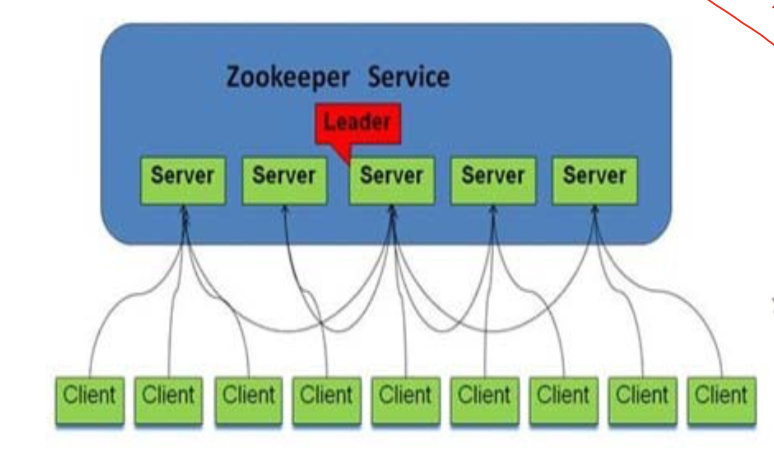
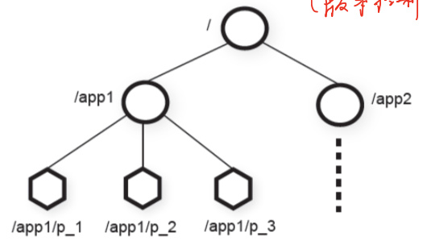
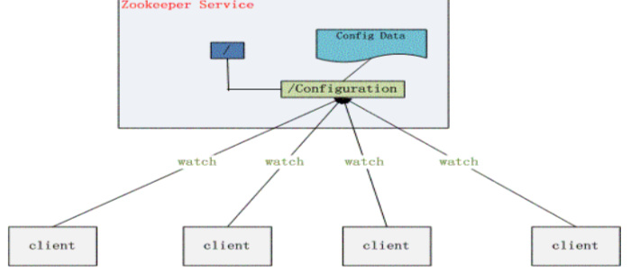

背景介绍
HDFS1.0
- 名称节点保存元数据:
- 在磁盘上
- FsImage和EditLog
- 在内存中
- 映射信息，即文件包含哪些块，每个块存储在哪个数据节点
- 在磁盘上
- 单点故障
SecondaryNameNode会定期和NameNode通信- 从
NameNode上获取到FsImage和EditLog文件，并下载到本地的 相应目录下 - 执行
EditLog和FsImage文件合并 - 将新的
FsImage文件发送到NameNode节点上 NameNode使用新的FsImage和EditLog(缩小了)
- 从
- 第二名称节点用途
- 不是热备份
- 主要是防止日志文件
EditLog过大，导致名称节点失败恢复时消耗过多时间 - 附带起到冷备份功能
- 因此，
NameNode保存元数据：- 如何解决单点故障的问题？
- 如何借助系统实现热备份？
HDFS HA（High Availability）
NameNode之间的数据同步- 借助共享存储系统或JNs(Journal Nodes)实现
NameNode之间的状态感知- 一旦Active出现故障，立即切换Standby
ZooKeeper简介
- ZooKeeper
- 轻量级的分布式系统
- 作用
- 用于解决分布式应用中通用的协作问题
- 命名管理 Naming
- 基本功能
- 配置管理 Configuration Management
- 集群管理 Group Membership
- 监控集群状态
- 同步管理 Synchronization
系统架构
- 单机提供服务，多机组成集群来提供服务或一台机器多个ZooKeeper Server
- 
Zookeeper角色
- Server：负责管理元数据
- Leader
- 某一个server，保证分布式数据一致性的关键，何时需要选取leader?
- 服务器初始化启动
- 服务器运行期间无法和Leader保持连接
- Leader
- Client
- 需要进行协作的用户(系统) 提供元数据
- 获取元数据，并据此执行相应操作
ZooKeeper数据模型
- 维护类似文件系统的层次数据结构
- Znode
- Znode doesn’t not design for data storage, instead it store meta-data or configuration
- Can store information like timestamp version
- Znode类型
- Regular(常规)
- Ephemeral(临时)
- Znode标识
- Sequential flag
- 
ZooKeeper Service
- Client
- Client可以在某个Znode上设置一个Watcher，来Watch该Znode上的变化
- Server
- 一旦这个Znode中存储的数据的修改，子节点目录的变化等，可以通知设置监控的客户端
- Session
- A connection to server from client is a session
- Timeout mechanism
Znode
- 可根据属性分为四种类型
- 是否会自动删除
- Regular Znode
- 用户需要显式的创建、删除
- Ephemeral Znode
- 用户创建后，可以显式的删除，也可以在Session结束后，由ZooKeeper Server自动删除
- Regular Znode
- 是否带有顺序号
- 如果创建的时候指定Sequential，该Znode的名字后面会自动Append一个不断增加SequenceNo
ZooKeeper典型应用
命名管理
- 统一命名服务
- 分布式应用通常需要一套命名规则，既能够产生唯一的名称又便于人识别和记住
- 树形的名称结构:通常情况下树形的名称结构
- 既对人友好，又不会重复
- Name Service已经是Zookeeper内置的功能，只要调用Zookeeper的API就能实现
动态配置管理
场景
- 用户命令行修改了默认的参数 方法:
配置信息存在 ZooKeeper 某个目录节点，所有机器watch该目录节点
- 一旦发生变化，每台机器收到通知，然后从 ZooKeeper获取新的配置信息应用到系统中
- 
集群管理
- 监控集群状态
- 新增或减少slave
- 对每个进程创建一个Znode在统一的一个文件目录下，并以
EPHEMERAL mode
- 对每个进程创建一个Znode在统一的一个文件目录下，并以
- 如何做到？
- 当新建文件时，文件个数发生变化，可以感知
- 当机器宕机时，由于时临时的，文件个数减少，可以感知
- 新增或减少slave
- 选主（Leader Election）
- 对每一个进程创建一个Znode，并以
EPHEMERAL_SEQUENTIAL mode - 每次选择序号最小的那个为leader
- 对每一个进程创建一个Znode，并以
同步管理
共享锁
- Simple Lock
- Create a Znode l for locking
- If one gets to create l, he gets the lock Others who fail to create watch l
- Herd effect(羊群效应)
- 大量客户端监听同一个Znode，ZooKeeper需要发出大量的事件通知
- 解决方案:分散
- 因此，需要实现负载均衡，具体算法可以参考这里。
队列管理
两种类型的队列
- FIFO队列
- 按照FIFO方式进行入队和出队操作，
- 例如实现生产者和消费者模型
- 同步队列
- 当一个队列的成员都聚齐时，这个队列才可用，否则一直等待所有成员到达
- 也会出现羊群效应
双屏障
- 允许客户端在计算的开始和结束时同步。 当足够的进程加入到双屏障时，进程开始计算。当计算完成时，离开屏障。
- 实现方法
- 进入屏障:创建/ready和/process节点，每个 进程都先到ready中注册，注册数量达到要求时 ，通知所有进程启动开始执行
- 离开屏障
- 在/process下把注册ready的进程都 建立节点，每个进程执行结束后删掉/process 下对应节点。当/process为空时，任务全结束